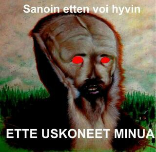

Hyvinvointini on tallella
Majoitus
Ulkopaikkakuntalaiset ATK-YTP-osallistujat majoittuvat Turun AMK:n tiloissa osoitteessa Ruiskatu 8. Majoituksessa ollessasi muistathan kunnioittaa tiloja sekä tiloissa olevia majoitusvalvojia. Roskat roskiin, tarpeet vain saniteettitiloihin ja desibelilevelit kohtuullisissa rajoissa. Majoituksessa ei myöskään käytetä alkoholia. T.äiti
Aukioloajat:
- Keskiviikkona 17.10. klo 10-12 sekä uudelleen illalla klo 21 eteenpäin
- Torstaina 18.10. klo 11 saakka sekä uudelleen illlalla klo 21 eteenpäin
- Perjantaina 19.10 klo 11 saakka
HUOM! Majoituksen aukioloajat ovat edellämainitut eikä niistä poiketa.
Majoitukseen takaisin pääsee kätevimmin käyttämällä YTP-osallistujille järjestettyjä busseja, jotka kulkevat yöllä keskustasta majoitukseen. Bussin lähtöpaikka keskustassa on ravintola Storagea vastapäätä, osoitteessa Aurakatu 8.
Bussi kulkee non-stop Aurakadun ja majoituksen väliä klo 02-04.30
Bussin lähtöpaikka Google MapsissaTaksitolpat
- Yliopiston vierestä
- Keskusta, keskiviikon jatkobileiden vierestä
- Keskusta, torstain jatkobileiden vierestä
- Keskusta, kauppatorin laidalla
- Kaikki edellämainitut taksitolpat
Ruokapaikat
Kuten jokainen kunnollinen isäntä, olemme mekin ottaneet huomioon majoituksen lisäksi YTP-osallistujien ravitsemustarpeet ja sopineet muutamasta vatsalaukkuja varmasti miellyttävästä diilistä!
Turkulainen opiskelijaravintolaketju Unica on luvannut tapahtuman kunniaksi tarjota turkulaisten all-time-favourite opiskelijaruokaa eli Kievin kanaa kahdessa ravintolassaan keskiviikkona (Galilei) sekä torstaina (Assarin ullakko), joten päiväsaikaan kannattaa suunnata tutustumaan tarkemmin tähän makuhermoja hivelevään ateriaan.
Agoralla sijaitseva Galilei (lounas klo 14.30 saakka )
Mäen juurella, Hämeenkadun vieressä sijaitseva Assarin ullakko (klo 20 saakka). Samoissa tiloissa myös kasvisruokaa tarjoava Brygge (klo 20 saakka)
Lisäksi alle kilometrin päässä yliopistolta löytyy useita muitakin opiskelijaravintoloita, jotka löytyvät oheisesta linkistä päivän ruokalistoineen.
YTP-pitsukebutarjous!
Sanoiko joku pitsu? Kyllä! Sanoiko joku pitsua alennettuun hintaan? KYLLÄ! Turun keskustassa ovensa klo 16 avaava ravintola Aurora tarjoaa kaikille YTP-osallistujille annoksiaan alennettuun hintaan aina aamuviiteen saakka. Ravintolasta löytyy annoksia niin pitsakebuista salaatteihin, joten tätä tarjousta ei todellakaan kannata missata.
Aurora löytyy täältä!Turusta löytyy myös muita ravintoloita, joista paikalliset suosittelevat esimerkiksi seuraavia:
Alkot, kaupat & apteekit
Janottaako? Kolottaako viinahammasta? Tekivätkö kaljakoppa ja viinitonkka ennenaikaisen tyhjenemisen? Ei hätiä mitiä hyvä ystävä.
Turun Alkot palvelevat seuraavasti:
Alko, K-Citymarket, lähinnä majoitusta (auki 9-21)
Alko, kauppakeskus Wiklund, torin vieressä (auki 9-21)
Alko, kauppakeskus Hansa, torin vieressä, viinipainotteinen valikoima (auki 9-21)
Kaikki Alkot kartalla
Kauppoja juotavan ja purtavan metsästäjille:
Lähimpänä majoitusta: Sale Petrelius (avoinna 8-21)
Hämeenkadun Sale (auki 7-23)
Hämeenkadun K-market Puhakka, panimo-oluita! (auki 6.30-22)
Wiklundin S-market (avoinna 7-23)
Keskustan Lidl (avoinna 7-21)
Kaubat kätevästi kartalla
Apteekit:
Hätäpuhelin
Jos joku tarvitsee lääkäriä, soitathan yleiseen hätänumeroon 112.
Jos kyse on tapahtumaan liittyvästä kriisistä, meillä on käytössä tapahtuman ajan päivystävä puhelin akuuteille "hätä"tilanteille. Ethän soittele tähän numeroon ellei kyseessä ole tilanne, johon tarvitset järjestäjien välitöntä puuttumista. Järjestäjät tarvitsevat työrauhan.
Tapahtuman päivystävä puhelin: 041 568 8889<
Hyvinvointini on vaakalaudalla
Haluan majoitukseen
Majoitus on osoitteessa Ruiskatu 8. ÄLÄ PYÖRÄILE!
Pääset sinne takaisin helpoiten hyppäämällä majoituksen ja keskustan väliä kulkevaan ATK-YTP-bussiin.
Bussi kulkee non-stop Aurakadun ja majoituksen väliä klo 02-04.30
Bussin lähtöpaikka tästä Taksitolpat kartallaMajoituksessa koita tähdätä omaan makuupussiin tai patjaan, muista juoda vettä ja valvojien sana on laki. Majoituksessa ei myöskään käytetä alkoholia. T.äiti
Aukioloajat:
- Keskiviikkona 17.10. klo 10-12 sekä uudelleen illalla klo 21 eteenpäin
- Torstaina 18.10. klo 11 saakka sekä uudelleen illlalla klo 21 eteenpäin
- Perjantaina 19.10 klo 11 saakka
Majoituksesta pääsee pois jalan, busseilla (reittioppaasta löydät reitit ja aikataulut) tai taksilla. Kävellen navigaattoriin hakusanoiksi Natura tai Agora Turun Yliopiston sijaan.
Ruokapaikat
Päivällä Unican kaksi opiskelijaraflaa tarjoavat legendaarista Kievin kanaa muiden vaihtoehtojen ohella:
Agoralla sijaitseva Galilei (lounas klo 14.30 saakka)
Mäen juurella, Hämeenkadun vieressä sijaitseva Assarin ullakko (klo 20 saakka). Samoissa tiloissa myös kasvisruokaa tarjoava Brygge (klo 20 saakka)
Illalla / yöllä mene Auroraan! Kaikki YTP:osallistujat saavat alennettuun hintaan ruokaa aamuviiiteen saakka! HUOMIO SIIS AAMUVIITEEN SAAKKA!
Aurora löytyy täältä!Turusta löytyy myös muita ruokamestoja, tässä linkki, josta löytyy muutamia:
Muita ravintoloitaViinat ja lääkkeet
Hätäpuhelin
Jos joku tarvitsee lääkäriä, soitathan yleiseen hätänumeroon 112.
Jos kyse on tapahtumaan liittyvästä kriisistä, meillä on käytössä tapahtuman ajan päivystävä puhelin akuuteille "hätä"tilanteille. Ethän soittele tähän numeroon ellei kyseessä ole tilanne, johon tarvitset järjestäjien välitöntä puuttumista. Järjestäjät tarvitsevat työrauhan.
Tapahtuman päivystävä puhelin: 041 568 8889<
Olen roskis
Haluan sammua
Näytä tämä osoite taksikuskille:
Ruiskatu 8, Turku
En voi hyvin
Juo vettä!
Hätäpuhelin
Pyydä kaveria soittamaan 112, jos on oikeasti hätätilanne, etkä itse pysty.